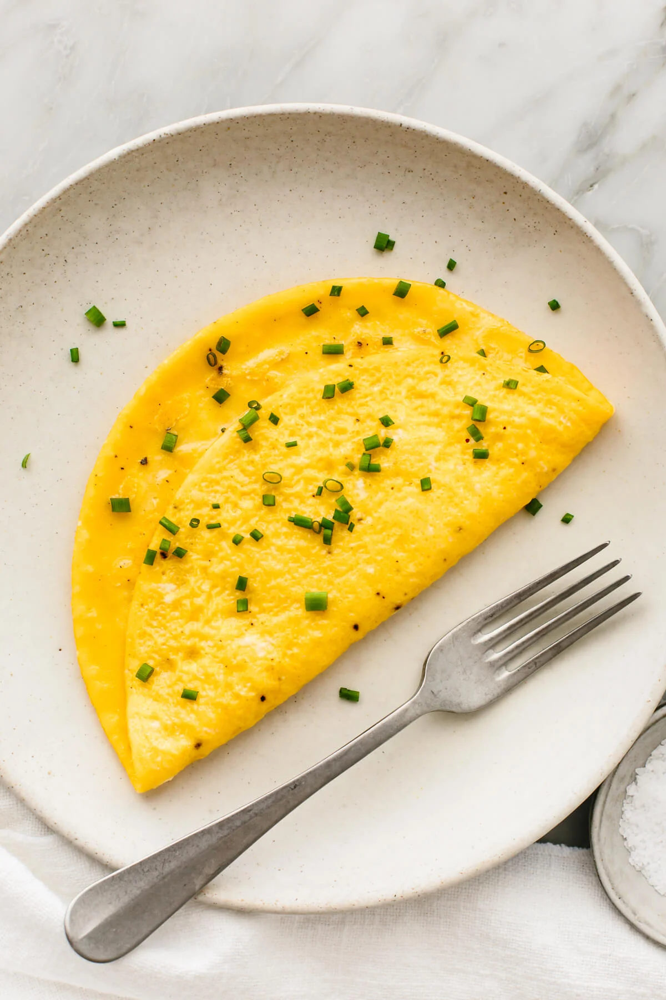

Omelette

An Eggscellent Dish Everyone Will Enjoy
This simple dish is packed with protein, and can be made under 10 minutes. An ideal dish for those in a hurry
Ingredients
- 3 eggs
- Handfull of chopped chives
- 1 tbsp butter
Steps
- Whisk the eggs in a bowl with some salt and pepper and set aside
- Heat the butter in a frying pan on medium-high heat
- When the butter is melted, place the whisked eggs into the frying pan
- Allow the mixture to cook and set
- When the mixture has set, fold in half, cook a for a couple more
- Transfer the omelette to a plate and top with the chives